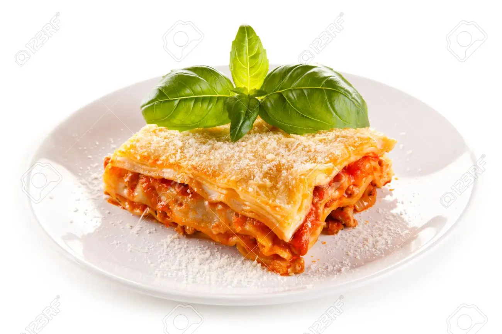

Home >
Traditional Lasagna

Description
A classic italian dish that is easy to prepare and popular with the whole
family.
Highly nutritious. Rich in protein and carbohydrates. Hungry teenagers and
bulking gym bros will totally approve.
Prep time: 20 min
Cook time: 40 min
Serves 6 people
Ingredients
- 375g Lasagna Sheets
- 1/2 cup mozzarella cheese (to sprinkle on top before baking)
Meat Sauce
- 1 tbsp oil
- 1 onion, finely chopped
- 1 garlic clove, crushed
- 500g beef mince
- 425g crushed tomato
Cheese Sauce
- 2 tbsp butter
- 2 tbsp plain flour
- 2 cups milk
- 1/2 cup parmesan/cheddar cheese, grated
Steps
- Pre-heat oven to 190°C.
-
To make the meat sauce, sauté onion and garlic until soft. Add beef
mince and cook until browned.
-
Stir in San Remo tomato-based sauce. Season with salt and pepper to
taste.
- Cover and simmer for 10-20 mins.
-
To make the cheese sauce, heat butter in a saucepan over low heat. Add
flour and mix until smooth.
-
Gradually add milk and gently bring to the boil, stirring until thick
and smooth.
- Add parmesan or cheddar cheese, stir until melted.
-
To construct lasagna, in a lightly greased baking dish, layer meat
sauce, cheese sauce and lasagna sheets, (making sure the lasagna sheets
are totally covered).
-
Repeat layers, finishing with cheese sauce. Scatter over mozzarella
cheese.
-
Cover loosely with foil, bake 20 minutes. Remove foil, bake a further
5-10 minutes until browned.
- Serve and enjoy with family and friends!